1. Qué son OSM y JOSM¶
Note
Autores:
- Pedro-Juan Ferrer @vehrka · pferrer@osgeo.org
- Iván Sanchez @realivansanchez · ivan@sanchezortega.es
- Santiago Tramoyeres @santracraus
Licencia:
Excepto donde quede reflejado de otra manera, la presente documentación se halla bajo licencia Creative Commons Reconocimiento Compartir Igual
1.1. Introducción a OpenStreetMap¶
OpenStreetMap es un proyecto colaborativo para crear mapas libres y editables. Se dice que OSM es a lo mapas, como la Wikipedia a las enciclopedias. Actualmente hay más de 500.000 usuarios registrados.
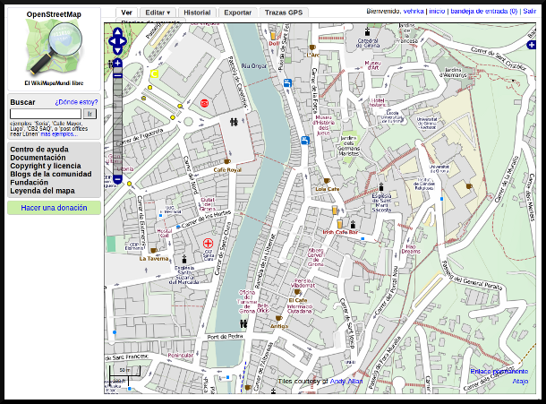{kind=link}
La página principal de OSM es http://www.openstreetmap.org/ donde puede verse el mapa que generan los usuarios. La comunidad se organiza a través de una wiki cuya dirección es http://wiki.openstreetmap.org/
El proyecto es propiedad de la Fundación OpenStreetMap cuyo objetivo es fomentar el crecimiento, desarrollo y distribución de datos geoespaciales libres y a proveer datos geoespaciales a cualquiera para usar y compartir. Los datos tienen una licencia Creative Commons Attribution-ShareAlike 2.0, aunque está en proceso de ser cambiada a Open Database License 1.0.
1.2. Historia¶
El proyecto nace de la mano de Steve Coast en 2004 que por discrepancias personales con la gestión cartográfica y los precios del organismo británico Ordnance Survey decide crear una base de datos cartográfica accesible a todos los públicos.
En 2006 el proyecto toma forma de fundación sin ánimo de lucro y en ese mismo año Yahoo autoriza a la fundación a utilizar su capa de imágenes aéreas de todo el mundo para que los usuarios puedan digitalizar información sobre ellas.
En 2007 la empresa Automotive Navigation Data (AND) dona sus datos de los Países Bajos y de las principales carreteras de la India y China a la fundación y además se incorpora la información de TIGER (Censo de EEUU).
En 2008 la aparece la empresa CloudMade con el objetivo de explotar comercialmente la información del proyecto y que dona a la fundación 2,4 Millones ; en ese mismo año la iniciativa pública canadiense GeoBase.ca dona sus datos de Canadá al proyecto.
En 2009 se libera la versión 0.6 de la API y se incrementan en casi 100.000 el número de usuarios duplicando los existentes en solo un años.
En 2010 tiene lugar en Girona la conferencia State of the Map, Bing Maps (Microsost) permite el uso de sus imágenes para digitalizar información y el Ordnance Survey decide liberar sus dato.
En 2011 se superan los 500.000 usuarios.
En 2012 Foursquare abandona el uso de Google Maps y pasa a usar datos de OSM renderizados por MapBox. Apple emplea (sin respetar la licencia) los datos de OSM para su aplicación iPhoto 11.
1.3. Procedimiento¶
Los mapas se realizan siguiendo 3 pasos:
- Toma de datos
- Subida de datos a los servidores de OSM:
- Edición gráfica de los datos
- Edición alfanumérica de los datos
- Renderizado de los mapas
1.3.1. Toma de datos¶
Los datos se recopilan por observación directa, preferentemente empleando GPS, aunque pueden emplearse otros medios como fotografía aérea si los derechos de la imagen lo permite. Aún así el proyecto recomienda conocer y recorrer la zona personalmente para garantizar la máxima calidad del resultado.
Los orígenes más comunes de datos son:
- Trazas GPS, resultado de recorrer la zona usando un dispositivo GPS que almacene dicha información.
- También suelen usarse waypoints, fotos geolocalizadas y archivos de audio geolocalizados
- Imágenes de Yahoo, Bing Maps, el PNOA en España, Landsat y en general cualquier imágen cuyos derechos de autor hayan sido expresamente cedidos, se hayan extinguido o estén en el dominio público.
- Mapas e información de los usuarios. Siempre que se trate de información en el dominio público o cuyos derechos de autor hayan sido expresamente cedidos.
- Información prévia existente que requiera ser incluida en un mapa.
1.3.2. Subida de datos a los servidores de OpenStreetMap¶
Una vez recopilada la información, esta debe ser incorporada a la base de datos de OSM. Para ello existen diversos médios, aunque principalmente se emplea el cliente web Potlach2:

y el cliente de escritorio JOSM:
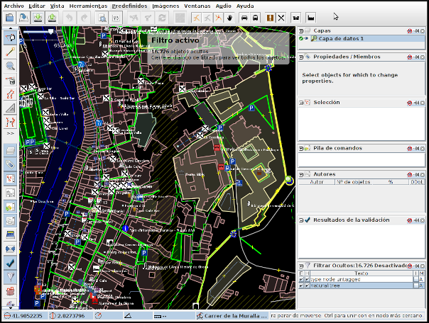{kind=link}
En cualquier caso lo más frecuente es convertir los datos GPS tomados al formato estándar GPX y subirlos posteriormente al repositorio de trazas GPS de OSM de forma que cualquier usuario pueda acceder a dicha información.
1.3.2.1. Edición gráfica de los datos¶
Empleando alguna de las aplicaciones que lo permiten; como Potlach2, JOSM o Merkaartor por ejemplo; se descarga del servidor la porción de información que se quiere editar, para que esta se ajuste a los estándares acordados en el proyecto.
OpenStreetMap solo reconoce 2 tipos de datos gráficos:
- Nodos: Son elementos puntuales
- Vías: Conexiones lineales entre nodos.
- Vías abiertas: Vías que tienen entre 2 y 2000 nodos
- Vías cerradas: Vías que empiezan y acaban en el mismo nodo y definen una forma poligonal.
- Áreas: Zonas contenidas dentro de Vías cerradas
1.3.2.2. Edición alfanumérica de los datos¶
OpenStreetMap reconoce 2 tipos de datos alfanuméricos:
- Relación: Lista ordenada de nodos con un rol, como por ejemplo una restricción de giro.
- Etiqueta: Par clave/valor que permite definir atributos.
El modelo de datos alfanuméricos de OSM se basa en el uso de etiquetas tags consensuadas por los usuarios a través de la wiki del proyecto.
Las etiquetas se definen por un par clave/valor. Actualmente hay más de 700 claves “oficialmente” reconocidas y varios centenares propuestos.
Esta información adicional alfanumérica permite clasificar los datos para que el proceso de renderizado los muestre correctamente representados.
1.3.3. Renderizado de los mapas¶
El proyecto OSM tiene varios motores de renderizado tanto en 2D como en 3D que permiten obtener una imagen de la información de la base de datos.
Los principales motores de renderizado son:
- Osmarender En realidad se trata más bien de un conjunto de reglas XLST que genera SVG.
{kind=link}
Note
Desde Febrero de 2012 ya no se emplea Osmarender de manera oficial y recomendada por OSM.
- Mapnik Toma los datos y los carga en un PostGIS para posteriormente renderizar tiles de 256x256.
{kind=link}
1.4. Obteniendo los datos de OpenStreetMap¶
Daremos un rápido vistazo al formato XML de OSM y a JOSM como herramienta para obtener y mejorar los datos.
1.4.1. OSM XML Data: el formato OpenStreetMap¶
Toda la API de OSM está basada en arquitectura RESTFul y reconoce los cuatro elementos.
El formato de intercambio estándar de la API es un XML compuesto por combinaciones de esos elementos.
1.4.1.1. Nodos (Node)¶
Los Nodos tienen, entre otras informaciones, las siguientes características:
- id: el identificador
- lat y lon: la posición geográfica en EPSG4326
- visible: boolean que determina la visibilidad
- user: usuario que creó la versión del nodo
- timestamp: marca de tiempo de creación
- version: incremental para cada objeto.
Además el Nodo puede contener información asociada al estilo OSM a traves de pares key/value
<node id="25496583" lat="51.5173639" lon="-0.140043" version="1" changeset="203496" user="80n" uid="1238" visible="true" timestamp="2007-01-28T11:40:26Z">
<tag k="highway" v="traffic_signals"/>
</node>
1.4.1.2. Vías (Way)¶
Las Vías son listas ordenadas de nodos que tienen información como:
- id: el identificador
- visible: boolean que determina la visibilidad
- user: usuario que creó el nodo
- timestamp: marca de tiempo de creación
- version: incremental para cada objeto.
Debe tener una lista de nodos agrupados cada uno con su etiqueta XML nd con la referencia id de los nodos que agrupa. Además la Vía puede contener información asociada al estilo OSM a traves de pares key/value
<way id="5090250" visible="true" timestamp="2009-01-19T19:07:25Z" version="8" changeset="816806" user="Blumpsy" uid="64226">
<nd ref="822403"/>
<nd ref="21533912"/>
<nd ref="821601"/>
<nd ref="21533910"/>
<nd ref="135791608"/>
<nd ref="333725784"/>
<nd ref="333725781"/>
<nd ref="333725774"/>
<nd ref="333725776"/>
<nd ref="823771"/>
<tag k="highway" v="unclassified"/>
<tag k="name" v="Clipstone Street"/>
<tag k="oneway" v="yes"/>
</way>
1.4.1.3. Relaciones (Relation)¶
Las Relaciones son listas ordenadas de objetos, son objetos en si mismas y sirven para definir relaciones entre cualquier tipo de objeto. También tienen información como:
- id: el identificador
- visible: boolean que determina la visibilidad
- user: usuario que creó el nodo
- timestamp: marca de tiempo de creación
Y además en una etiqueta XML member definir atributos type, id y role que permiten configurar la relación y unas etiquetas tag para describir el tipo de relación.
<relation id="77" visible="true" timestamp="2006-03-14T10:07:23+00:00" user="fred">
<member type="way" id="343" role="from" />
<member type="node" id="911" role="via" />
<member type="way" id="227" role="to" />
<tag k="type" v="restriction"/>
<tag k="type" v="no_left_turn"/>
</relation>
{kind=link}
1.5. JOSM¶
JOSM es el acrónimo de Java OpenStreetMap Editor, se trata de una aplicación multiplataforma desarrollada por Immanuel Scholz y Frederik Ramm. Es el editor preferido por la comunidad OSM, ya que tiene muchas funcionalidades implementadas y permite editar gran cantidad de datos, aunque su curva de aprendizaje puede resultar un poco pronunciada al inicio.
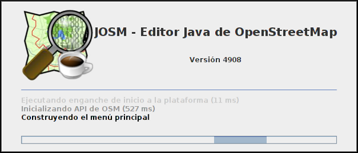{kind=link}
1.5.1. Descarga de datos¶
JOSM trabaja por defecto con archivos de formato XML de OSM (archivos .osm). Para obtener un archivo de la zona con la que se quiere trabajar hay que pulsar el botón de Descarga de datos del servidor. Al pulsar el botón se muestra una interfaz donde se puede seleccionar la porción de datos que quiere obtenerse.

El servidor limita las peticiones que cubran gran extensión para no colapsar el servicio, pero si se requiere gran cantidad de datos se pueden realizar diversas peticiones que acabarán almacenándose en un solo fichero.
Una vez seleccionada la zona y aceptada la petición por el servidor creará una capa que aparecerá en lado izquierdo de JOSM. Pulsando con el botón derecho sobre el nombre de la capa nos permitirá almacenar la capa con la ruta y nombre de archivo deseados.
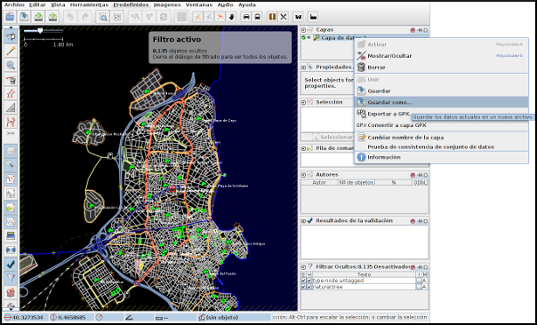{kind=link}
1.5.2. Edición básica¶
Una edición básica de JOSM puede incluir la carga de datos GPS o el uso de imágenes satélite u ortofotografías, la digitalización de información, el etiquetado de la información y finalmente la subida de datos al servidor de OSM.
1.5.2.1. Carga de datos GNSS¶
JOSM permite cargar información obtenida a través de un receptor GNSS usando para ello el formato de intercambio estandar GPX.
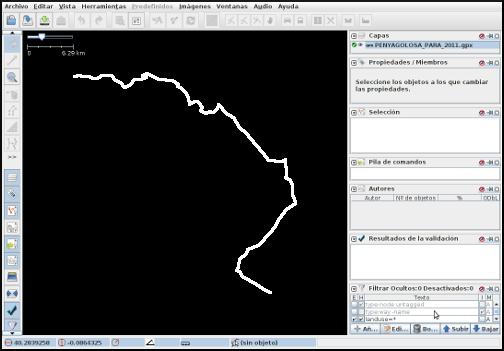{kind=link}
Se recomienda encarecidamente no subir esta información directamente sin depurar o sin tratar, es preferible siempre usarla como base para digitalizar sobre ella y añadir los atributos correspondientes.
1.5.2.2. Añadir PNOA¶
También se pueden usar imágenes en distintos formatos para usarlas como cartografía de referencia y poder digitalizar sobre ellas.
En especial tienen significativa importancia dentro de JOSM la posibilidad de cargar imágenes base provenientes de diversos Proveedores a través de Internet cuya información ya viene integrada en el propio JOSM o incluso se pueden agregar nuevos como por ejemplo orígenes de datos WMS o TMS.
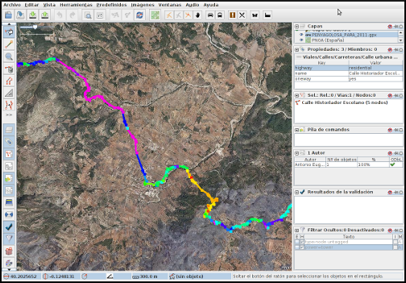{kind=link}
Se puede acceder a la configuración de los proveedores a través del menú Editar>Preferencias>WMS/TMS
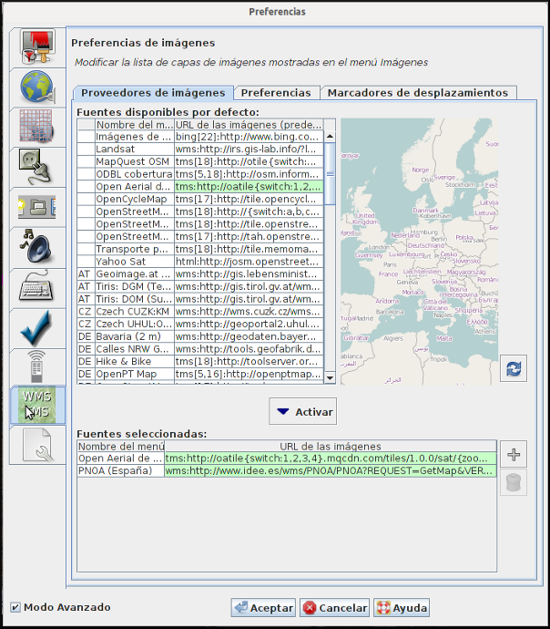{kind=link}
En España está autorizado el uso del PNOA para digitalizar sobre las ortofotos siempre que se identifiquen el origen y la resolución temporal con las etiquetas source y sourcedate.
NO está autorizado el uso del WMS de Catastro para digitalizar sobre él y la sospecha de que se está empleando puede incurrir en la suspensión de la cuenta y el borrado de todos los datos aportados por ese usuario.
Se puede regular la opacidad de una capa para mejorar la visualización.
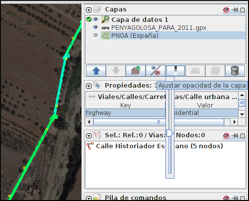{kind=link}
1.5.2.3. Digitalizar¶
La digitalización en Josm consiste en utilizar las primitivas de Punto, Línea y Área para representar los elementos del terreno.
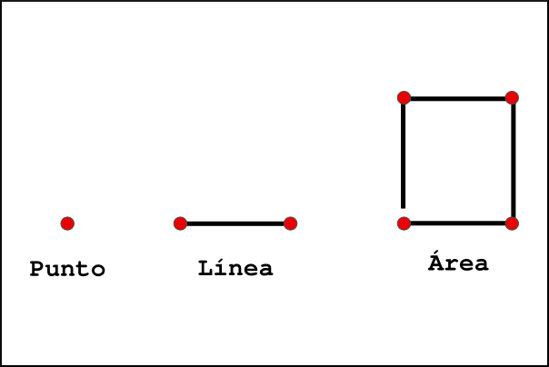{kind=link}
Los comandos más utilizados son
| Comando | Icono | Atajo |
|---|---|---|
| Agregar nuevo elemento | a | |
| Seleccionar elemento | s | |
| Modo Zoom | z | |
| Borrar selección | 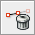 | Ctrl+Del |
| Separar vía | p | |
| Combinar vías | c |
{kind=link}
{kind=link}
{kind=link}
{kind=link}
{kind=link}
{kind=link}
1.5.2.4. Uso de filtros¶
Los filtros son una característica de JOSM que permite ocultar temporalmente elementos cargados en pantalla para tener una mejor visibilidad del área de trabajo.
Antes de aplicar un filtro:
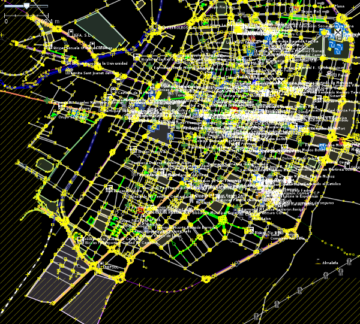{kind=link}
Tras aplicar el filtro:
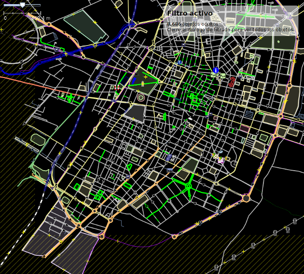{kind=link}
Para definir nuevos filtros se utiliza la ventana de Filtrar
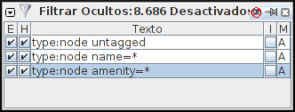{kind=link}
La sintaxis de los filtros es bastante sencilla y al Añadir uno nuevo se nos muestra una pequeña guía con ejemplos.
Los filtros que se muestran en la imágen realizan lo siguiente:
- Filtrar todos los nodos que no tengan etiqueta
- Filtrar todos los nodos que tengan la etiqueta name sea cual sea el valor de esta
- Filtrar todos los nodos que tengan la etiqueta amenity (otra forma de filtrar sin que importe el valor de la etiqueta)
1.5.2.5. Poner etiquetas¶
Para añadir etiquetas a un objeto se emplea el botón Añadir de la ventana Propiedades/Relaciones
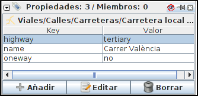{kind=link}
En una nueva ventana se nos permite poner el par clave/valor:
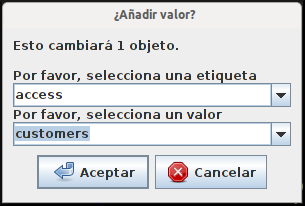{kind=link}
1.5.2.6. Subir al servidor¶
Por último, para subir los cambios a los servidores de OSM hay que tener un Usuario y contraseña válido de OpenStreetMaps.